Azure Fundamentals Exam Part 3
191. HOTSPOT -
For each of the following statements, select Yes if the statement is true. Otherwise, select No.
NOTE: Each correct selection is worth one point.
Hot Area:
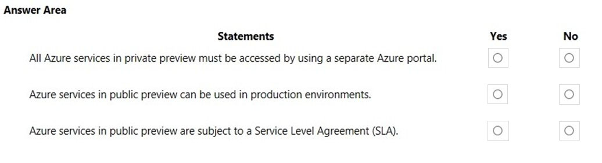
192. Your company has 10 offices. You plan to generate several billing reports from the Azure portal. Each report will contain the Azure resource utilization of each office. Which Azure Resource Manager feature should you use before you generate the reports?
A. tags
B. templates
C. locks
D. policies
193. HOTSPOT -
For each of the following statements, select Yes if the statement is true. Otherwise, select No.
NOTE: Each correct selection is worth one point.
Hot Area:
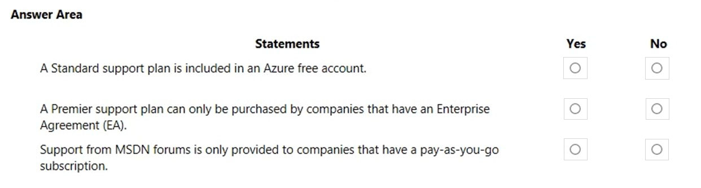
194. This question requires that you evaluate the underlined text to determine if it is correct. If Microsoft plans to end support for an Azure service that does NOT have a successor service, Microsoft will provide notification at least 12 months before. Instructions: Review the underlined text. If it makes the statement correct, select ג€No change is neededג€. If the statement is incorrect, select the answer choice that makes the statement correct.
A. No change is needed.
B. 6 months
C. 90 days
D. 30 days
195. HOTSPOT -
For each of the following statements, select Yes if the statement is true. Otherwise, select No.
NOTE: Each correct selection is worth one point.
Hot Area:
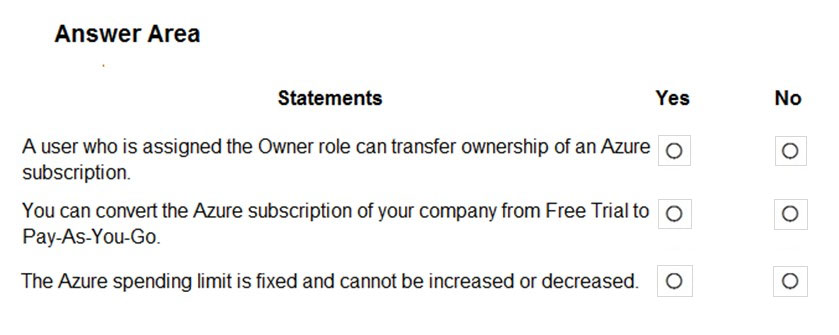
196. HOTSPOT -
For each of the following statements, select Yes if the statement is true. Otherwise, select No.
NOTE: Each correct selection is worth one point.
Hot Area:
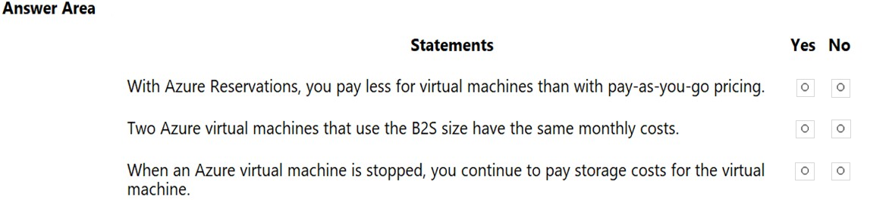
197. Note: This question is part of a series of questions that present the same scenario. Each question in the series contains a unique solution that might meet the stated goals. Some question sets might have more than one correct solution, while others might not have a correct solution. After you answer a question in this section, you will NOT be able to return to it. As a result, these questions will not appear in the review screen. Your company has an Azure subscription that contains the following unused resources: ✑ 20 user accounts in Azure Active Directory (Azure AD) ✑ Five groups in Azure AD ✑ 10 public IP addresses ✑ 10 network interfaces You need to reduce the Azure costs for the company. Solution: You remove the unused network interfaces. Does this meet the goal?
A. Yes
B. No
198. Note: This question is part of a series of questions that present the same scenario. Each question in the series contains a unique solution that might meet the stated goals. Some question sets might have more than one correct solution, while others might not have a correct solution.
After you answer a question in this section, you will NOT be able to return to it. As a result, these questions will not appear in the review screen.
Your company has an Azure subscription that contains the following unused resources:
20 user accounts in Azure Active Directory (Azure AD)
✑ Five groups in Azure AD
✑ 10 public IP addresses
✑ 10 network interfaces
You need to reduce the Azure costs for the company.
Solution: You remove the unused public IP addresses.
Does this meet the goal?
A. Yes
B. No
199. Note: This question is part of a series of questions that present the same scenario. Each question in the series contains a unique solution that might meet the stated goals. Some question sets might have more than one correct solution, while others might not have a correct solution. After you answer a question in this section, you will NOT be able to return to it. As a result, these questions will not appear in the review screen. Your company has an Azure subscription that contains the following unused resources: ✑ 20 user accounts in Azure Active Directory (Azure AD) ✑ Five groups in Azure AD ✑ 10 public IP addresses ✑ 10 network interfaces You need to reduce the Azure costs for the company. Solution: You remove the unused user accounts. Does this meet the goal?
A. Yes
B. No
200. HOTSPOT -
How should you calculate the monthly uptime percentage? To answer, select the appropriate options in the answer area.
NOTE: Each correct selection is worth one point.
Hot Area:
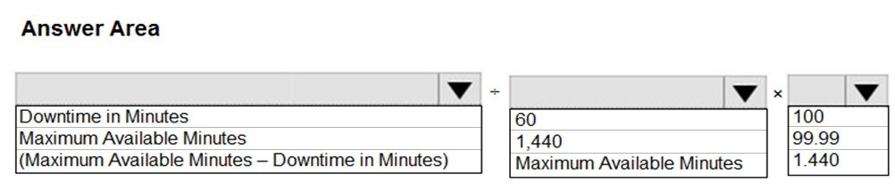
201. HOTSPOT -
For each of the following statements, select Yes if the statement is true. Otherwise, select No.
NOTE: Each correct selection is worth one point.
Hot Area:
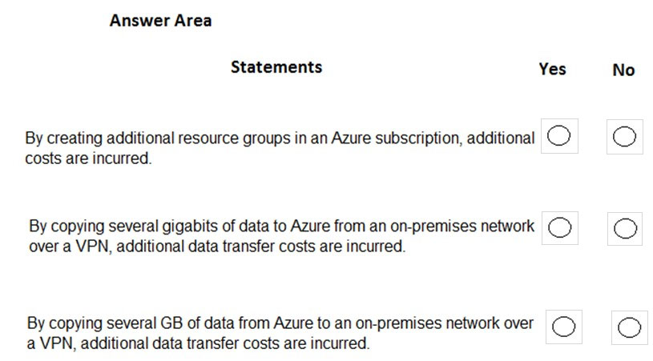
202. This question requires that you evaluate the underlined text to determine if it is correct. A support plan solution that gives you best practice information, health status and notifications, and 24/7 access to billing information at the lowest possible cost is a Standard support plan. Instructions: Review the underlined text. If it makes the statement correct, select ג€No change is neededג€. If the statement is incorrect, select the answer choice that makes the statement correct.
A. No change is needed
B. Developer
C. Basic
D. Premier
203. In which Azure support plans can you open a new support request?
A. Premier and Professional Direct only
B. Premier, Professional Direct, and Standard only
C. Premier, Professional Direct, Standard, and Developer only
D. Premier, Professional Direct, Standard, Developer, and Basic
204. This question requires that you evaluate the underlined text to determine if it is correct. You can create an Azure support request from support.microsoft.com. Instructions: Review the underlined text. If it makes the statement correct, select ג€No change is needed.ג€ If the statement is incorrect, select the answer choice that makes the statement correct.
A. No change is needed.
B. the Azure portal
C. the Knowledge Center
D. the Security & Compliance admin center
205. Note: This question is part of a series of questions that present the same scenario. Each question in the series contains a unique solution that might meet the stated goals. Some question sets might have more than one correct solution, while others might not have a correct solution. After you answer a question in this section, you will NOT be able to return to it. As a result, these questions will not appear in the review screen. Your company has an Azure subscription that contains the following unused resources: ✑ 20 user accounts in Azure Active Directory (Azure AD) ✑ Five groups in Azure AD ✑ 10 public IP addresses ✑ 10 network interfaces You need to reduce the Azure costs for the company. Solution: You remove the unused groups. Does this meet the goal?
A. Yes
B. No
206. This question requires that you evaluate the underlined text to determine if it is correct. The Azure Standard support plan is the lowest cost option to receive 24x7 access to support engineers by phone. Instructions: Review the underlined text. If it makes the statement correct, select ג€No change is neededג€. If the statement is incorrect, select the answer choice that makes the statement correct.
A. No change is needed.
B. Developer
C. Basic
D. Professional Direct
207. HOTSPOT -
To complete the sentence, select the appropriate option in the answer area.
Hot Area:
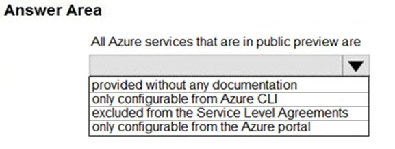
208. What is guaranteed in an Azure Service Level Agreement (SLA) for virtual machines?
A. uptime
B. feature availability
C. bandwidth
D. performance
209. HOTSPOT -
To complete the sentence, select the appropriate option in the answer area.
Hot Area:
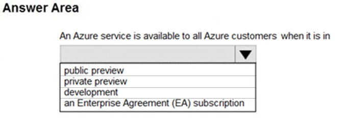
210.Note: This question is part of a series of questions that present the same scenario. Each question in the series contains a unique solution that might meet the stated goals. Some question sets might have more than one correct solution, while others might not have a correct solution. After you answer a question in this section, you will NOT be able to return to it. As a result, these questions will not appear in the review screen. Your company plans to purchase an Azure subscription. The company's support policy states that the Azure environment must provide an option to access support engineers by phone or email. You need to recommend which support plan meets the support policy requirement. Solution: Recommend a Basic support plan. Does this meet the goal?
A. Yes
B. No
211. Note: This question is part of a series of questions that present the same scenario. Each question in the series contains a unique solution that might meet the stated goals. Some question sets might have more than one correct solution, while others might not have a correct solution. After you answer a question in this section, you will NOT be able to return to it. As a result, these questions will not appear in the review screen. Your company plans to purchase an Azure subscription. The company's support policy states that the Azure environment must provide an option to access support engineers by phone or email. You need to recommend which support plan meets the support policy requirement. Solution: Recommend a Standard support plan. Does this meet the goal?
A. Yes
B. No
212.Note: This question is part of a series of questions that present the same scenario. Each question in the series contains a unique solution that might meet the stated goals. Some question sets might have more than one correct solution, while others might not have a correct solution. After you answer a question in this section, you will NOT be able to return to it. As a result, these questions will not appear in the review screen. Your company plans to purchase an Azure subscription. The company's support policy states that the Azure environment must provide an option to access support engineers by phone or email. You need to recommend which support plan meets the support policy requirement. Solution: Recommend a Premier support plan. Does this meet the goal?
A. Yes
B. No
213. Your company plans to request an architectural review of an Azure environment from Microsoft. The company currently has a Basic support plan. You need to recommend a new support plan for the company. The solution must minimize costs. Which support plan should you recommend?
A. Premier
B. Developer
C. Professional Direct
D. Standard
214. HOTSPOT -
For each of the following statements, select Yes if the statement is true. Otherwise, select No.
NOTE: Each correct selection is worth one point.
Hot Area:
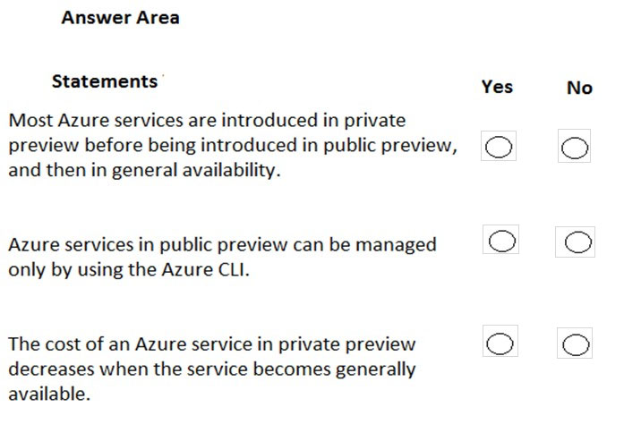
215. What is required to use Azure Cost Management?
A. a Dev/Test subscription
B. Software Assurance
C. an Enterprise Agreement (EA)
D. a pay-as-you-go subscription
216. HOTSPOT -
To complete the sentence, select the appropriate option in the answer area.
Hot Area:
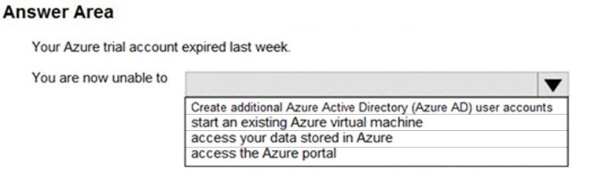
217. Note: This question is part of a series of questions that present the same scenario. Each question in the series contains a unique solution that might meet the stated goals. Some question sets might have more than one correct solution, while others might not have a correct solution. After you answer a question in this section, you will NOT be able to return to it. As a result, these questions will not appear in the review screen. Your company plans to purchase an Azure subscription. The company's support policy states that the Azure environment must provide an option to access support engineers by phone or email. You need to recommend which support plan meets the support policy requirement. Solution: Recommend a Professional Direct support plan. Does this meet the goal?
A. Yes
B. No
218. Your company has a Software Assurance agreement that includes Microsoft SQL Server licenses. You plan to deploy SQL Server on Azure virtual machines. What should you do to minimize licensing costs for the deployment?
A. Deallocate the virtual machines during off hours.
B. Use Azure Hybrid Benefit.
C. Configure Azure Cost Management budgets.
D. a pay-as-you-go subscription
219. Your company has 10 departments. The company plans to implement an Azure environment. You need to ensure that each department can use a different payment option for the Azure services it consumes. What should you create for each department?
A. a reservation
B. a subscription
C. a resource group
D. a container instance
220. HOTSPOT -
For each of the following statements, select Yes if the statement is true. Otherwise, select No.
NOTE: Each correct selection is worth one point.
Hot Area:
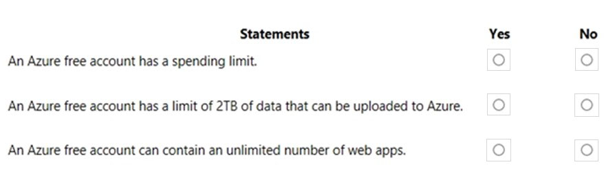
221. HOTSPOT -
For each of the following statements, select Yes if the statement is true. Otherwise, select No.
NOTE: Each correct selection is worth one point.
Hot Area:
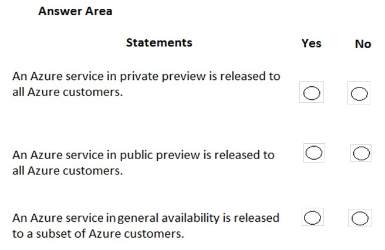
222. HOTSPOT -
For each of the following statements, select Yes if the statement is true. Otherwise, select No.
NOTE: Each correct selection is worth one point.
Hot Area:
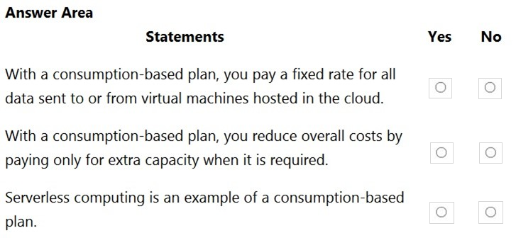
223. HOTSPOT -
For each of the following statements, select Yes if the statement is true. Otherwise, select No.
NOTE: Each correct selection is worth one point.
Hot Area:
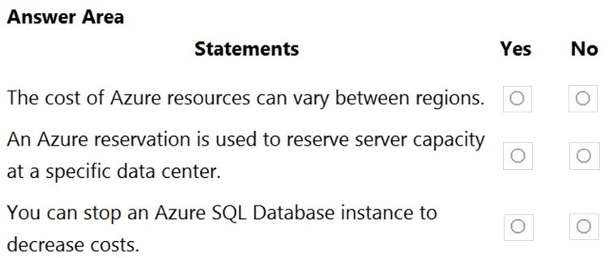
224.HOTSPOT -
To complete the sentence, select the appropriate option in the answer area.
Hot Area:
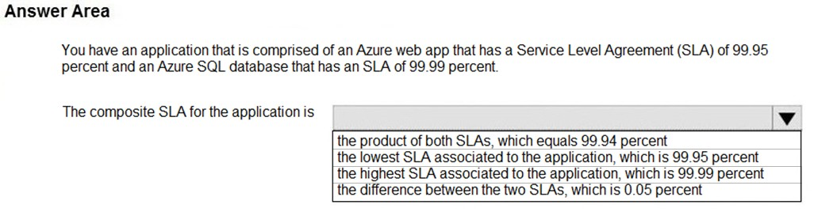
225. HOTSPOT -
For each of the following statements, select Yes if the statement is true. Otherwise, select No.
NOTE: Each correct selection is worth one point.
Hot Area:
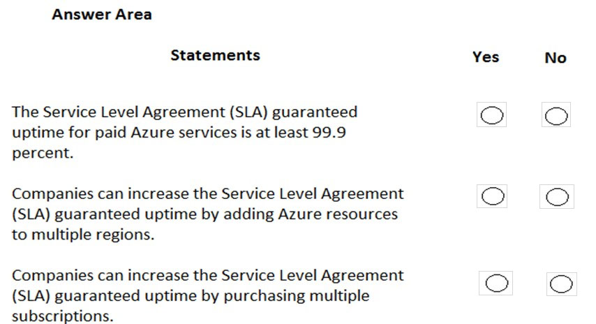
226. Which statement accurately describes the Modern Lifecycle Policy for Azure services?
A. Microsoft provides mainstream support for a service for five years.
B. Microsoft provides a minimum of 12 months' notice before ending support for a service.
C. After a service is made generally available, Microsoft provides support for the service for a minimum of four years.
D. When a service is retired, you can purchase extended support for the service for up to five years.
228. HOTSPOT -
To complete the sentence, select the appropriate option in the answer area.
Hot Area:
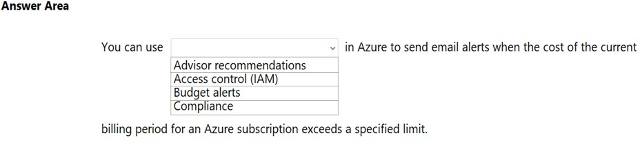
A. a lock
B. an Azure role
C. a tag
D. an Azure policy
229. HOTSPOT -
For each of the following statements, select Yes if the statement is true. Otherwise, select No.
NOTE: Each correct selection is worth one point.
Hot Area:
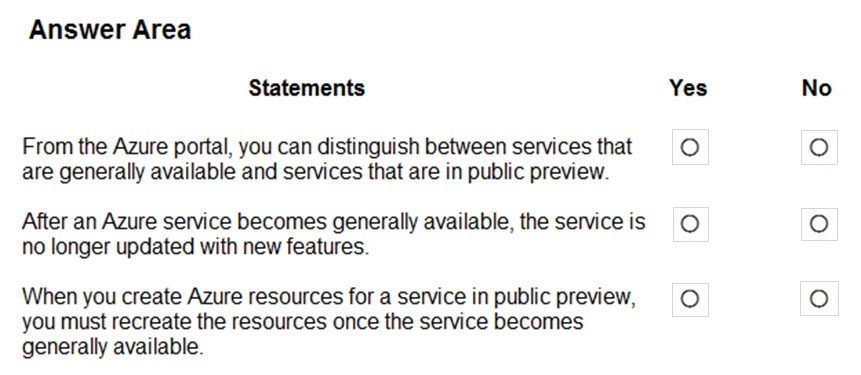
230. HOTSPOT -
For each of the following statements, select Yes if the statement is true. Otherwise, select No.
NOTE: Each correct selection is worth one point.
Hot Area:
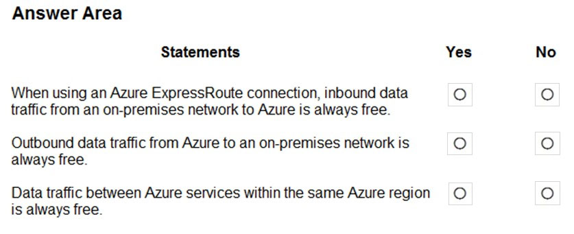